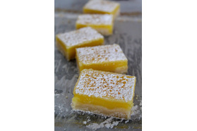

Recette 1: Tarte au Fraises
Découvrez nos irrésistibles tartes aux fraises! Avec leur croûte croustillante et leurs fraises juteuses, chaque bouchée est une explosion de saveurs estivales. Parfaites pour ajouter une touche de délice à votre journée ensoleillée!
Voir la recette en français
Voir la recette originale
Recette 2:Tartes à la main maison - Cerise au fromage à la crème et citron au fromage à la crème
Dégustez nos délicieuses tartes à la main maison, avec des saveurs de cerise et de citron. Chaque bouchée offre une croûte croustillante et une garniture crémeuse.
Voir la recette en français
Voir la recette originale
Recette 3:Carreaux au citron
Les barres au citron, avec leur mélange parfaitement équilibré de croûte sablée et de garniture au citron rafraîchissante!
Voir la recette originale

Recette 4:Shortbreads aux Fraises
Découvrez nos délicieux shortbreads aux fraises! Avec leur texture fondante et leur garniture de fraises fraîches, chaque bouchée est un véritable délice.
Voir la recette originale
Recette 5: Truffes Oreo pour la Journée de la Terre
Découvrez nos Truffes Oreo pour la Journée de la Terre ! Laissez-vous tenter par la combinaison irrésistible de biscuits Oreo mélangés à une garniture crémeuse, roulés en délicieuses bouchées. Parfaites pour célébrer notre planète tout en satisfaisant vos envies sucrées.
Voir la recette originale